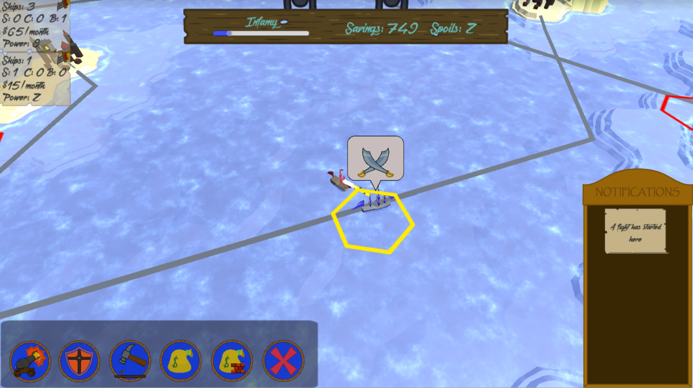
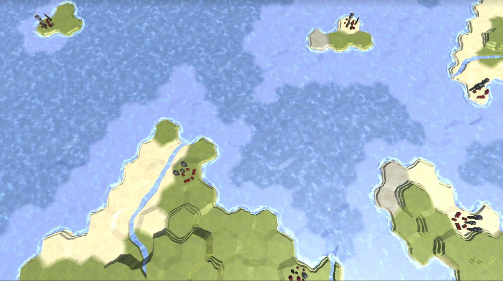
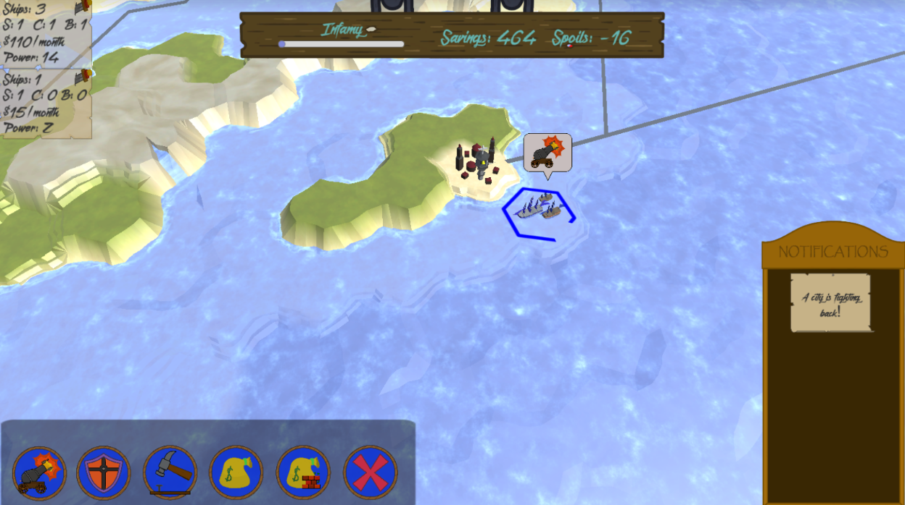
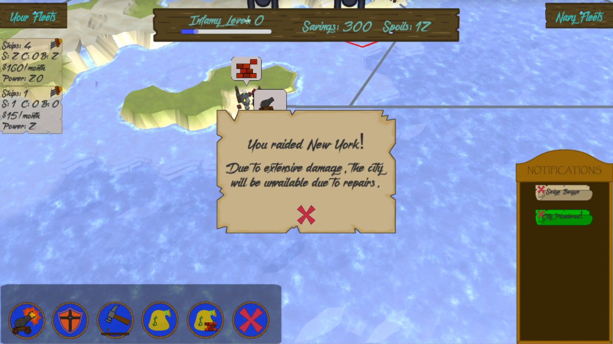

Genre - RTS
Role - Lead Programmer
Team Size - 5
Dev Time - 6 weeks
Role - Lead Programmer
Team Size - 5
Dev Time - 6 weeks




Golden Seas is a real time strategy game where you play as a pirate lord commanding your
fleets to attack and plunder the Royal Navy and her cities. The game was made with a team
of two designers, one 3D artist, one UI artist, and myself as the sole programmer.
It won the award for technical acheivement as well as being runner up for best in show in
the 2019 Student Showcase Event
at MSU.
Positives
The game has a robust world generation toolset for the designers to create maps with,
as well as easy customization to all ships and cities. Teamwork and collaboration on the idea
of how the final product should look went well. Everybody helped with roles other than
their primary one.
Future Upgrades
The AI is not properly fleshed out at the moment and could use some beefing up, it is currently
exploitable and unbalanced.
Tutorial is a long wall of text, not interactable. Further work on the game would require
creating a viable tutorial.
What I learned
Structuring classes planning for class inheritence ahead of time. Implementing designer
wishes for visuals and functionality of UI. Realtime mesh generation. XML serialization.
Custom binary save files.